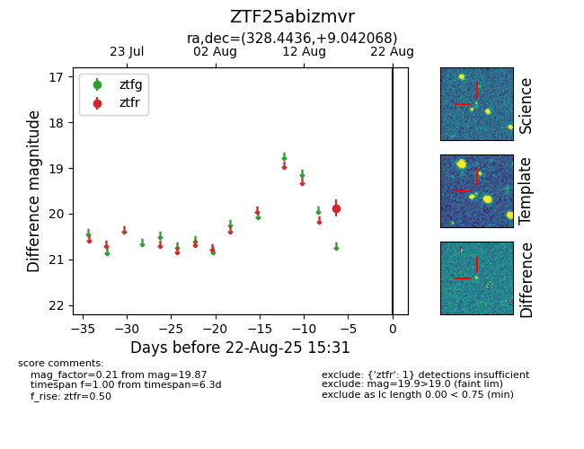

Target ZTF25abizmvr at 2025-08-22 16:11, see:
FINK: fink-portal.org/ZTF25abizmvr
Lasair: lasair-ztf.lsst.ac.uk/objects/ZTF25abizmvr
ALeRCE: alerce.online/object/ZTF25abizmvr
alt names
ZTF25abizmvr (ztf,alerce)
coordinates:
equatorial (ra, dec) = (328.4436,+9.04207)
galactic (l, b) = (66.6648,-33.78912)
photometry
last ztfr=19.87
1 ztfr detections
